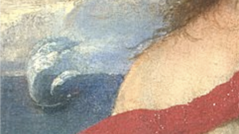
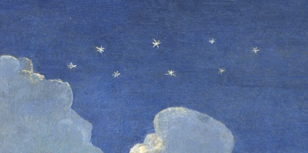
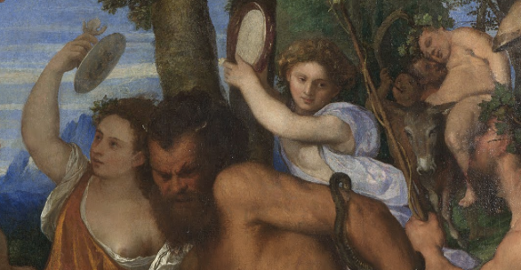

Bacco e Arianna, Tiziano

Tiziano Vecellio, Bacco e Arianna, 1520-23, olio su tela, 176,5×191 cm.
Londra, National Gallery
| ID | NG35 |
|---|---|
| Titolo | Bacco e Arianna |
| Livello catalografico | item |
| Tipologia | Olio su tela |
| Classificazione | Dipinto |
| Data di creazione | 1520-23 |
| Autore | Tiziano Vecellio |
Collocazione Attuale Altra |
|
| Materiale | Tela |
| Dimensioni | 176,5x191 cm |
| Cultura | Italiana |
| Stile/Periodo/Gruppo/Movimento | Manierismo, Rinascimento |
| Soggetto generale | Mitologia |
| Soggetto specifico | Bacco Arianna |
| Fonti |
Fonti letterarie
Le Metamorfosi, Ovidio
Libro VIII, vv. 152-182
152. Non appena sbarcò dalla nave, toccando il suolo dei Cureti
153. Minosse sciolse i voti fatti a Giove con l'offerta
154. di cento tori e decorò la reggia appendendo i trofei di guerra.
155. Ma l'obbrobrio della sua stirpe cresceva: un mostro inaudito,
156. biforme, a denunciare l'immondo adulterio di sua madre.
157. Minosse decide di allontanare quel disonore da casa e
158. di rinchiuderlo nei ciechi recessi di un edificio insondabile.
159. Dedalo, famosissimo per il suo talento di costruttore,
160. esegue l'opera, rendendo incerti i punti di riferimento
161. e ingannando l'occhio con la tortuosità dei diversi passaggi.
162. Come nelle campagne di Frigia il Meandro si diverte a scorrere,
163. fluendo e rifluendo col suo imprevedibile corso,
164. e aggirando sé stesso scorge l'acqua che ancora deve raggiungerlo,
165. o, rivolto qui verso la sorgente, più in là verso il mare aperto,
166. tormenta indeciso il suo flusso; così Dedalo dissemina
167. d'inganni quel labirinto di strade, al punto che persino lui,
168. tanto è l'intrico di quella dimora, stenta a trovarne l'uscita.
169. Qui fu rinchiuso il mostro mezzo uomo e mezzo toro,
170. che dopo essersi nutrito due volte di giovani ateniesi,
171. scelti ogni nove anni a sorte, la terza fu ucciso da Teseo
172. con l'aiuto della figlia di Minosse: riavvolgendo il suo filo,
173. lui guadagnò l'uscita che nessuno prima aveva ritrovato;
174. poi rapì la fanciulla e fece vela alla volta di Dia,
175. dove senza pietà abbandonò la sua compagna
176. lungo la spiaggia. In quella desolazione a lei che piangeva
177. venne in aiuto Libero col suo abbraccio e, per immortalarla
178. in una costellazione, le tolse dalla fronte il suo diadema
179. e lo scagliò nel cielo. Vola quello leggero nell'aria
180. e mentre vola, le gemme si mutano in fulgidi fuochi,
181. che mantenendo l'aspetto di un diadema, vanno a fermarsi
182. a mezza strada tra l'Uomo in ginocchio e il Portatore di serpente.
Versione latina con traduzione Testo completoFasti, Ovidio
None di Marzo, vv. 460-516
Di seguito, al calare della notte vedrai la Corona di Arianna: fu fatta dea per colpa di Teseo, l’ingrato al quale aveva dato il filo da svolgere. Lei aveva subito rimediato, scambiando lo sposo spergiuro con Bacco e, felice dell’amore che le era toccato, diceva: “Perché piango, sciocca? il traditore mi ha fatto un regalo.” Intanto, vinti gli indiani dai lunghi capelli, carico di ricchezze, tornava dall’Oriente Libero: tra le fanciulle prigioniere gli piaceva, anche troppo, la figlia del re, di una bellezza fuori dal comune. Piangeva la sposa innamorata e, capelli al vento, andando su e giù lungo la riva della baia, pronunziava queste parole: “Mare, ascolta ancora una volta i soliti lamenti! sabbia, accogli ancora una volta le mie lacrime! Mi ricordo che andavo dicendo: ‘Teseo, bugiardo e traditore.’, e quello se ne è andato; Bacco mi fa lo stesso torto, e anche ora andrò gridando: ‘Nessuna donna si fidi più di un uomo!’ Il nome è diverso, ma la storia è la stessa. Se almeno il mio destino si fosse concluso la prima volta, a quest’ora, ormai, non sarei più nulla! Perché mi hai salvato, Libero, se dovevo morire su una spiaggia deserta? Avrei potuto soffrire tutto in una volta. Bacco volubile, più volubile delle foglie che ti cingono le tempie, Bacco, che ho conosciuto soltanto per piangere, tu hai osato mettere alla prova un amore così ben riuscito e portarmi sotto gli occhi un’amante? dove è la fedeltà che mi hai promesso? dove i tanti giuramenti? povera me, quante volte ripeterò queste parole? Tu davi la colpa a Teseo, lo accusavi di essere un bugiardo ma, pro- prio con il tuo metro, la colpa tua è anche peggiore. Però, che nessuno sappia niente di questo, che il mio dolore bruci in silenzio, che non si pensi che io merito di essere ingannata così tante volte! In particolare vorrei che fosse tenuto nascosto a Teseo, perché non provi la felicità di averti complice nei suoi misfatti. Mi sembra di capire: un’amante dalla pelle chiara è meglio di me che sono scura, e magari fossero del suo colore le mie nemiche! D’altra parte, che importa? con i suoi difetti, lei ti piace ancora di più. Cosa stai facendo? la abbracci! e ti sporchi! Mantieni la parola, Bacco, non preferire altri amori a quello di tua moglie; io sono abituata ad amare il mio uomo per sempre. Le corna di un toro possente attirarono mia madre Pasifae, le tue attirarono me; a me fanno i complimenti, lei si deve vergognare. Non soffro per il fatto di amare e tu non hai sofferto, Bacco, dichiarandomi il tuo amore ardente. Non puoi meravigliarti, se questo amore mi brucia: tra le fiamme tu sei nato – si dice – e dalle fiamme ti strappò la mano di tuo padre. Io sono quella alla quale tu promettevi sempre il cielo; e adesso, al posto del cielo, che bei regali mi fai!” Aveva finito, ma Libero che, per caso, da un po’ le era alle spalle, stava ascoltando i suoi lamenti; la prende tra le braccia, con i baci le asciuga le lacrime e dice: “Andiamo insieme verso l’alto dei cieli. Sei stata unita a me nell’amore e sarai unita a me nel nome, nella tua nuova veste ti chiamerai Libera. Farò in modo che ti resti vicino un ricordo della corona che Vulcano regalò a Venere e Venere a te.” Detto fatto, trasforma le nove gemme in stelle, e ora la Corona d’oro brilla con le sue nove luci.
Versione latina con traduzione Testo completoCatullo, Carme LXIV
Lamento di Arianna, vv. 132-201
"Così dopo avermi portata via, perfido, dalle are della mia patria, mi hai abbandonata in un lido deserto, perfido Teseo? Così andandotene, trascurata la legge degli dei, immemore, ahimè! porti in patria gli spergiuri pronunciati? Nessuna considerazione ha potuto piegare la decisione della tua mente crudele? Nessuna clemenza è stata in te presente, tanto che il tuo animo crudele volesse avere compassione di me? Ma non queste promesse un tempo hai offerto con affettuosa voce a me, non queste cose facevi sperare (a me) infelice, ma lieto connubio, ma desiderate nozze, cose che tutte irrealizzate i venti disperdono all'aria. Adesso ormai nessuna donna creda a un uomo che giura, nessuna speri che i discorsi di un uomo siano credibili; finché l'animo loro desidera bramoso di raggiungere qualcosa, nulla temono di giurare, nulla risparmiano di promettere: ma non appena la libidine della cupida mente è stata saziata, per nulla temono le cose dette, per nulla si preoccupano degli spergiuri. Certamente io, quando ti trovavi in mezzo al turbine della morte, ti ho tratto in salvo, e ho deciso di perdere un fratello piuttosto che venir meno a te, bugiardo, nel momento estremo. In cambio di questo sarò data da sbranare a fiere ed uccelli come preda, né, morta, sarò sepolta sotto un mucchio di terra. Quale mai leonessa generò te sotto una rupe solitaria, quale mare sputò fuori (te) una volta concepito, dalle onde spumeggianti, quale Sirti, quale Scilla trascinatrice, quale devastatrice Cariddi, te che rendi tali regali invece di una vita piacevole? Se non ti stava a cuore il nostro matrimonio, perché temevi gli ordini crudeli del vecchio genitore, tuttavia avresti potuto condurmi nelle vostre sedi, affinché quale schiava con piacevole fatica io potessi accudirti, accarezzando con acqua limpida i tuoi candidi piedi, oppure ricoprendo il tuo letto con veste purpurea. Ma perché io, fuori dal mondo per la sventura, invano dovrei lamentarmi coi venti ignari, che dotati di nessuna sensazione, non possono né udire le parole pronunciate né rispondere? Lui poi si trova quasi già in mezzo al mare, né alcun essere umano si vede nella spiaggia solitaria. Così nel momento estremo calpestandomi fin troppo la sorte crudele ha negato anche ascolto ai miei lamenti. O Giove onnipotente, volesse il cielo che nel primo momento le navi ateniesi non avessero toccato i lidi di Cnosso, né portando all'indomito toro il crudele tributo il perfido navigante avesse legato la fune a Creta, né questo malvagio, celando col dolce aspetto le crudeli decisioni avesse riposato da ospite nella nostra sede! Dove potrei mai rivolgermi? A quale speranza mi appoggio, perduta? Dovrei cercare di raggiungere i monti cretesi? Ma col suo vasto gorgo dividendomi me ne tiene lontana la tempestosa distesa del mare. Potrei sperare forse nell'aiuto di mio padre? Quello che io stessa ho lasciato seguendo un giovane macchiato di sangue per l'uccisione di mio fratello? Dovrei consolarmi forse coll'amore fedele del mio compagno? Lui che fugge piegando i flessibili remi nell'acqua? E poi l'isola solitaria da nessuna casa è popolata, né è aperta una via di uscita, visto che le onde del mare la circondano. Nessun sistema di fuga, nessuna speranza: tutto muto, tutto è deserto, tutto fa vedere la morte. Tuttavia lo sguardo non mi si spegnerà per la morte, né i sensi se ne andranno dal corpo sfinito, prima che, tradìta, io chieda agli dei la giusta punizione e nell'estremo momento invochi la lealtà dei celesti. Perciò voi che punite le azioni degli uomini con la pena della vendetta Eumenidi, alle quali incoronata di capigliatura serpentina la fronte esibisce l'ira prorompente dell'animo, qui, qui venite, ascoltate i miei lamenti, che io, ahimè infelice, dal profondo midollo sono costretta a pronunciare, impotente, infuocata, accecata da folle furore. E poiché essi, veritieri, nascono dal profondo del petto, voi non permettete che il mio lutto resti vano, ma con quale animo Teseo mi lasciò sola, con tale animo, o dee, mandi in rovina e sé e i suoi."
Versione latina con traduzione Testo completoAnalisi dell'opera
Soggetto dell'opera
Per lo studiolo di Alfonso d’Este, Tiziano dipinse tre opere con soggetto mitologico. Una di queste è Bacco e Arianna nella quale il dio si innamora della giovane appena abbandonata da Teseo. Arianna osserva la nave di Teseo che si allontana sul mare. Intanto da destra giunge Bacco in testa al corteo. Il dio si lancia verso di lei dal carro guidato da due ghepardi. La giovane nel vedere il dio slanciarsi nudo verso di lei ha un moto di paura e alza una mano come a proteggersi.


Interpretazioni e Simbologia
L’episodio classico fu probabilmente ispirato dai testi di Ovidio e Catullo e Filostrato il Vecchio. Arianna era una principessa di Creta. La giovane sull’isola di Naxos, soffre per la partenza di Teseo mentre Bacco giunge a capo di un corteo trionfale. Il dio è seguito da baccanti, satiri e due ghepardi trainano il suo carro. Bacco si innamora di Arianna e in seguito la abbandona per recarsi in India. La giovane si trova così delusa e abbandonata dai due amanti. Al suo ritorno però il dio la consola e la porta con se in cielo trasformando la sua corona con nove gemme nella costellazione omonima.
La Committenza
Il dipinto intitolato Bacco e Arianna fu commissionato da Alfonso d’Este per il suo studio chiamato Camerino d’alabastro a Ferrara. Fa parte dei Baccanali insieme a La Festa degli amorini e il Baccanale degli Andrii. Nel 1598 Ferrara passò allo Stato della chiesa e lo studiolo venne smembrato. Le tele di Bellini e Tiziano finirono di proprietà del legato pontificio Aldobrandini. Le quattro opere vennero nuovamente separate. Il Festino degli dei e Bacco e Arianna furono cedute nel 1796, a Vincenzo Camuccini. In seguito alla sua morte Bacco e Arianna passò quindi al Day. Intorno al 1806-07 l’opera fu portata in Gran Bretagna. Infine nel 1826 Hamlet lo acquistò per la National Gallery.


Lo Stile
Il dipinto Bacco e Arianna è strutturato diagonalmente. Infatti il cielo con la costellazione che porta il nome della protagonista si trova nella metà diagonale di sinistra. La parte terrena invece, con i protagonisti e il corteo è nella metà di destra. Sulla diagonale che segna il confine tra i due regni avviene l’incontro tra Arianna e Bacco. I colori del dipinto sono molti e preziosi. Spiccano i blu, gli arancioni, i bruni e i verdi. I pittori veneziani erano infatti favoriti dai commerci e potevano ottenere con maggiore facilità pigmenti preziosi e di difficile commercio.
Saggi
Dosso Dossi, Giovanni Bellini e Tiziano nei "Camarini" di Alfonso I d'Este di Lorenzo Finocchi Ghersi
Lo studioso e docente universitario, Lorenzo Ghersi, si propone nel suo saggio di ricostruire la disposizione originale dei dipinti del camerino di Alfonso I d'Este. Le tele dei tre artisti italiani sono analizzate, in questo senso, ripercorrendo la narrazione iconografica che si svolgeva lungo le pareti della stanza.
Clicca per leggereIl mito di Arianna nell'arte e nella poesia di Laura Corchia
Non solo Tiziano. Poeti come Lorenzo de' Medici e artisti come Guido Reni, sono presi in esame per comparare le diverse interpretazioni del mito di Arianna nelle produzioni rinascimentali. Diverse letture e diverse rappresentazioni del mito antico sono qui proposte nel saggio della studiosa Laura Corchia.
Clicca per leggere